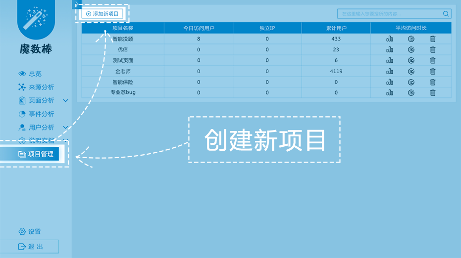
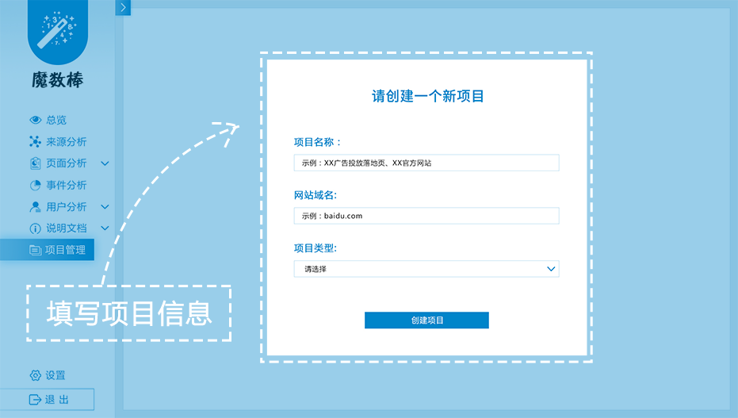
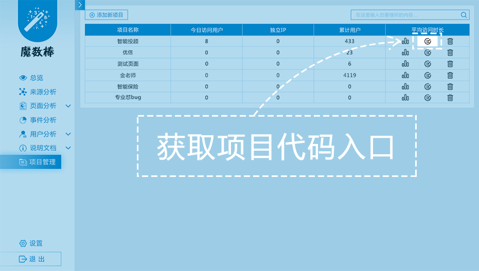
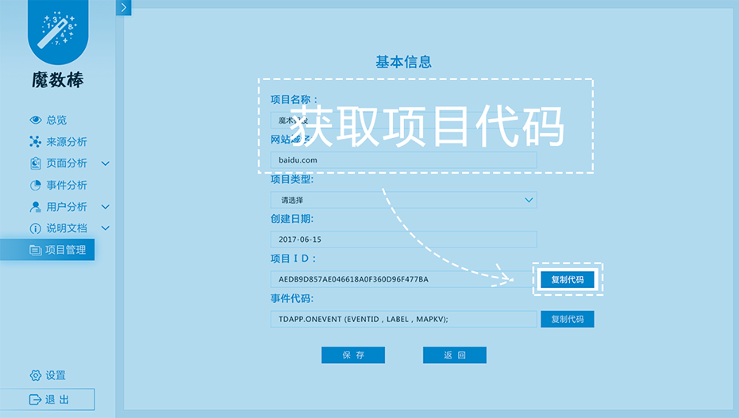
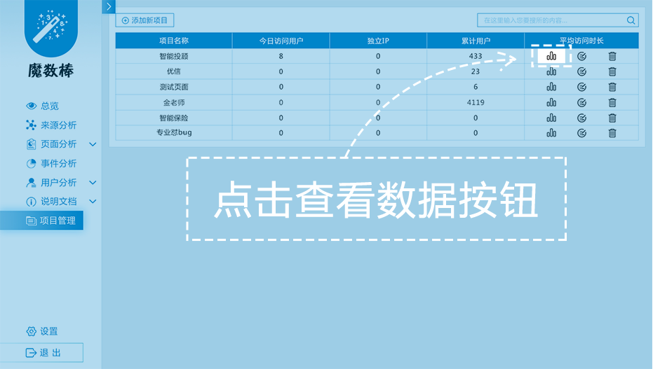

-
产品介绍：
魔数棒是东方国信大数据产品系列品牌“魔数咖”旗下的网站流量监测和分析工具，能够监测网站的用户来访情况，告诉您网站的访客从什么渠道而来，在网站上有怎样的行为,是否进行了转化，用户有什么特征，帮助您改善网站的引流、监控各渠道的推广效果、优化网站的内容、提高用户的体验，最终提升用户的转化率。
-
产品功能：
-
网站运营监测
魔数棒能够全程监测网站的运营情况，记录运营数据，展示包括网站的PV（浏览量）、UV（访客数）、独立IP访问次数、各种事件的触发次数等数据及变化趋势，帮助运营者掌握网站运营状况。
-
用户画像报告
魔数棒可以为运营者定制用户画像报告。结合运营商大数据，为运营者提供用户上网行为、兴趣偏好、地域分布等全方位的用户洞察画像，帮助运营者了解自己的用户特征，提高内容的针对性，促进用户转化。
-
来源渠道分析
魔数棒可以监测不同渠道的推广效果。通过添加不同的渠道，魔数棒能够监测包括直接访问、搜索引擎访问、各推广渠道访问的PV（浏览量）、UV（访客数）、独立IP个数、用户转化情况等，帮助运营者分析评价各个推广渠道的优劣，提升渠道推广效果。
-
转化效果分析
魔数棒可以监测用户的转化情况。通过在用户转化过程中的关键步骤设置“事件”，可以监测用户在转化过程各个关键步骤的触发情况，建立用户转化漏斗，帮助运营者优化产品设计，提高用户转化率。
-
-
适用范围：
魔数棒适用于各种类型的网站、网页，包括各类PC网站、手机网站、广告落地页、HTML5应用等。需要在目标网站上集成魔数棒的JS代码。目前代码支持IE、Chrome、Firefox、Opera、Safari等主流浏览器，部分小众浏览器需要集成代码后进行测试。(不支持的浏览器可能无法正常获取用户的浏览行为)
产品概况
-
1.创建新项目
点击项目管理进入项目管理页面，然后点击创建新项目，创建一个新项目
填写项目信息，创建新项目
 -
2.代码部署
在项目管理中获取项目代码

 -
3.查看统计数据
点击查看数据按钮，查看该项目的统计数据

新手入门
魔数棒的使用简单方便，仅需3步就能完成基础功能的部署，监测并记录您的网站运营情况。
-
Q1：魔数棒是什么？
魔数棒是东方国信大数据产品系列品牌“魔数咖”旗下的网站流量监测和分析工具，能够监测网站的用户来访情况，告诉您网站的访客从什么渠道而来，在网站上有怎样的行为，用户有什么特征，帮助您改善网站的引流、优化网站的内容、提高用户的体验，最终提升用户的转化率。
-
Q2：魔数棒能提供哪些服务/有哪些功能？
魔数棒能够实时监测网站的访客行为，为网站提供访客来源分析、网站页面分析、事件分析、用户转化分析、用户特征分析等服务，帮助网站合理选择引流渠道，提高用户转化率。
-
Q3：使用魔数棒的优势有哪些？
魔数棒能提供全面的用户行为监测，访客从何渠道来，在网站中有何行为，何时离开网站的数据都可得到，结合后端运营商庞大的用户偏好和行为数据，让您看到最完整的用户画像，了解最全面的用户偏好。
-
Q4：魔数棒是否收费？
魔数棒是一款免费的网站监测和分析工具，目前的所有功能不会收取任何费用。
-
Q5：如何使用魔数棒？
您需要注册一个账号，在账号下创建项目并获得项目ID和需要添加的代码，将代码添加到网站的每个页面中，即可监测访客数据（首次添加代码获取的数据会有一段时间的延迟）。
-
Q6：魔数棒的代码如何部署？
请您的网站开发人员在网站源码中加入一行代码即可。
-
Q7：魔数棒的监测数据是实时的吗？
是，代码部署成功后查看到的统计数据是实时数据。
-
Q8：为什么新增用户数据不准？
第一次加载我们的代码的用户都会被认为是新增用户，所以导致使用魔数棒初期新增用户数量偏高，比日志中获得的新用户多很多，这是很正常的，在使用一段时间后，数据会趋于正常。
-
Q13：使用魔数棒会使用户打开网页变慢吗？
不会。我们的统计程序使用异步加载，对网页打开速度的影响很小，可忽略不计。
-
Q16：魔数棒获得用户数据的原理是什么？
魔数棒通过在网页加载过程中异步加载一个程序脚本，采集用户的IP地址、用户识别码、来源URL等信息，并记录用户的浏览行为，返回到服务器后做与数据库进行用户匹配并做统计分析，最后展示分析结果。